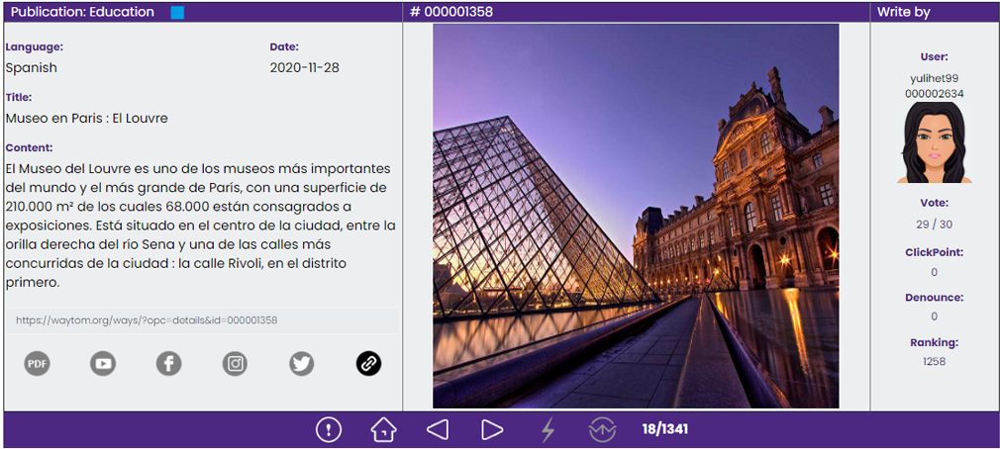
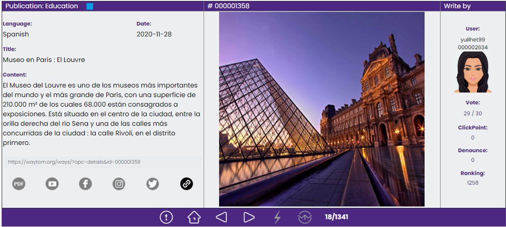

Menu


Copyright 2018 ® Waytom Project
All right reserved Waytom.
currencies (wtm), Ways, VPS-Miner & Nautilus Wex.
Ist das System, mit dem wir uns bei waytom.org registrieren und ein Konto erhalten können. Der erhaltene Berechtigungsnachweis Benutzername und Passwort muss Bewahren Sie es an einem sicheren Ort auf, da es dasselbe ist, mit dem Sie die Dienste VPS-Miner und Nautilus wex betreten.
Sie benötigen eine Brieftasche, wenn Sie Hilfe benötigen, gehen Sie zum Abschnitt Brieftasche.
Investor. Dieser versucht, alle möglichen Vermögenswerte zu schaffen und zu besitzen, die Einkommen bringen. Waytom ist Eine einkommensschaffende Maschine, die keine Wartungs- oder Betriebskosten erfordert. Mehr als Münzen kaufen und Ihren VPS-Miner aktivieren.
Kein Investor. Wenn Ihnen das Kapital fehlt, um eine Reihe von Münzen zu kaufen. Mit den WEGEN können Sie Münzen erhalten Durch die Unterstützung von Inhaltserstellern erhalten Sie auf diese Weise Ihre ersten Ressourcen. Wenn der Wunsch ist, schneller zu gehen und eine größere Menge zu erreichen Ressourcen in kurzer Zeit gibt es keine andere Möglichkeit, als Autor neuer Inhaltsblöcke (Wege) zu werden und eine Kampagne zu erstellen soziale Netzwerke, um möglichst viele neue Leute für die waytom-Community zu gewinnen.
Investor oder nicht wird ohne Unterbrechung immer mehr Krypto-Assets hinzufügen, Assets, die ein anderer will und die Sie kann bei Bedarf zur Verfügung stellen. Schauen Sie weiter und denken Sie voraus. Fügen Sie Ihrem Leben einen neuen Einkommensmotor hinzu. Dann überzeugt? Wir gehen mit registrieren.
Es gibt zwei Möglichkeiten, sich bei waytom.org zu registrieren: "mit oder ohne Einladung". Wenn Sie keinen Empfehlungslink haben, können Sie Hier Sie müssen sehr vorsichtig sein, wenn Sie Ihre E-Mail-Adresse eingeben, da Sie darauf zugreifen müssen, um Ihr Konto zu validieren Mit einem Sicherheitstoken (einer 6-stelligen Nummer), das in Ihrer E-Mail auf Sie wartet, um Ihr Konto zu validieren. Wenn Sie die E-Mail nicht sehen, kann dies zwei Gründe haben: Der erste, bei dem bei der Eingabe seiner Adresse ein Fehler aufgetreten ist, oder die E-Mail befindet sich möglicherweise im Bereich SPAM oder Spam. Wenn Sie Probleme bei der Registrierung haben von Ihrem Konto aus sehen Sie dies Video und versuche es erneut. Wichtig! ( support@waytom.org ist immer derjenige, der diese Nachrichten sendet)
Die Art und Weise erfüllt zwei wichtige Funktionen: Es ist der Benutzeradministrator (der Ort, an dem wir uns registrieren) und es ist auch die Plattform wo die Community interagiert. Das Dashboard begrüßt Sie, indem es Ihnen einen Id_User gewährt, der oben links (grüne Farbe) sichtbar ist. Diese Nummer ist eindeutig und wird verwendet, um sich als Benutzer zu identifizieren.
In den Veröffentlichungen sind alle von der Community erstellten Wege oder Blöcke aufgeführt. Ich empfehle Ihnen, mit den Autoren und zu interagieren unterstütze sie, wenn es dir gefällt. In gewisser Weise wird eine Unterstützung als Klickpunkt bezeichnet, und diese Aktion ermöglicht dem Autor der Wege und Ihnen, wer, die Monetarisierung Sie unterstützen es. Wenn niemand einen Weg unterstützt, der nicht monetarisiert werden kann, und wenn die Community die Wege aus den Veröffentlichungen entfernen möchte, besteht die Möglichkeit darin, die Wege zu melden.
 



Es ist ein Protokoll, das vom Waytom-Projektteam entwickelt wurde, um Ressourcen an Anfänger zu verteilen oder sie haben kein Kapital für die Erstinvestition. Eine Plattform, auf der Sie durch die Veröffentlichung von Inhalten Ihre gewünschten Projekte auch in der Phase ausdrücken, unterrichten und zeigen können von Ideen, so dass es von der gleichen Community in unserem eigenen wtm-Token monetarisiert wird.
Waytom gibt Ihnen die Möglichkeit, Ihre ersten Schritte zu unternehmen ohne Kapital zu haben. Interagiere und helfe dabei, eine riesige Welt zu schaffen, in der dein Wissen, deine Fähigkeiten und Fertigkeiten wichtig sind. Erstellen Sie Ihr Profil mit einem Avatar und Starten Sie jetzt, um Ihre Freunde einzuladen.
Sie sind das spanische Akronym, das das Programmed Coin Issuance System definiert, das die WEGE steuert und dies ermöglicht Alles funktioniert korrekt. Es handelt sich um eine Validierungs- und Executor-Engine, die kontinuierlich und ohne menschliches Eingreifen funktioniert. Berechnet, führt und schließt jeweils Konten Ende des Monats. Geben Sie jedem Benutzer, was er erreicht hat, direkt zu seinem Gleichgewicht.